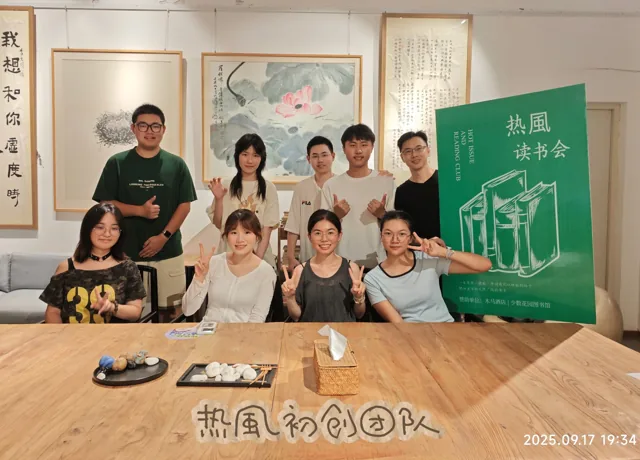
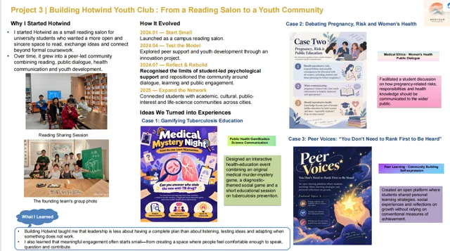
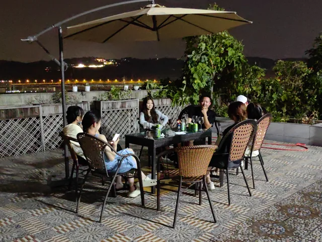
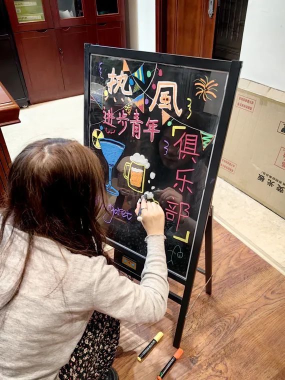
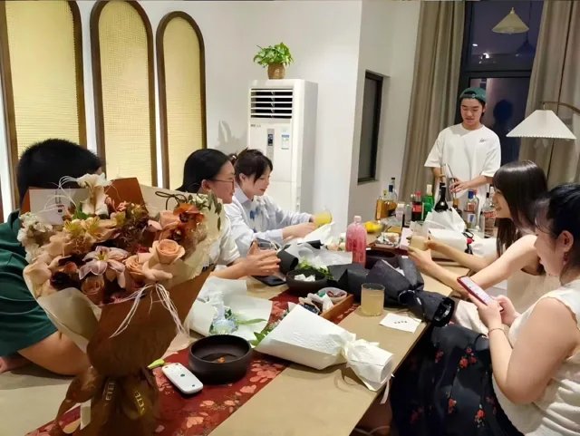
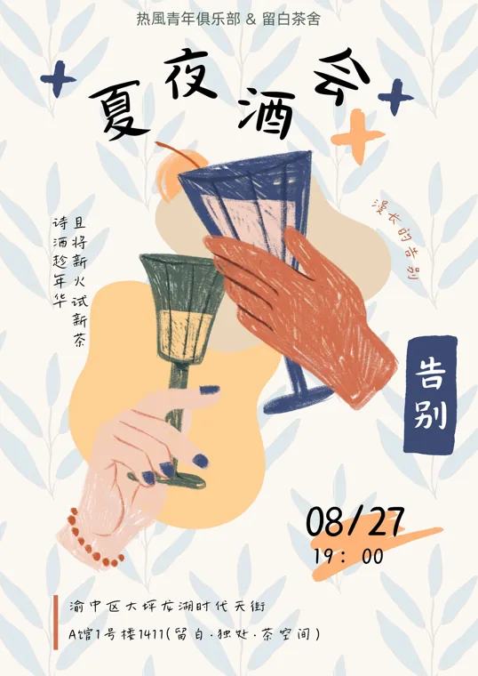
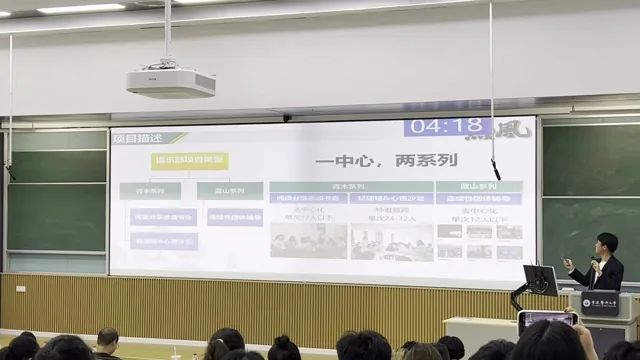
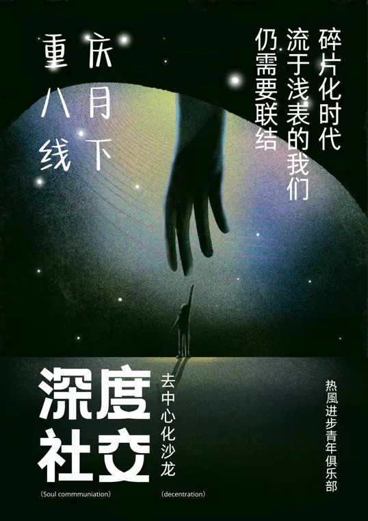
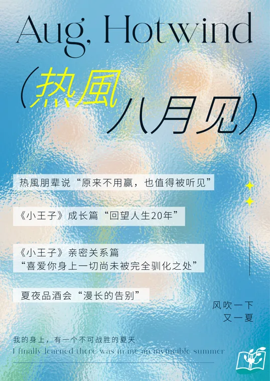
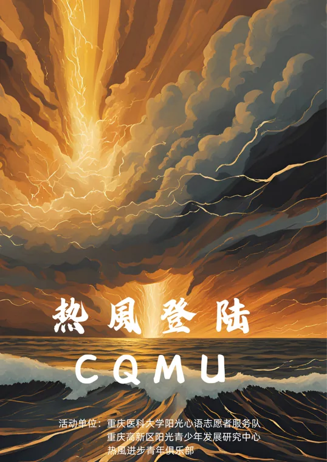

Hotwind team photograph beside the reading-club display.View full image ↗
THE ARCHIVE
Original event posters, photographs and selected project materials. Open an image to see it in full, with English and Chinese context.
This is a historical archive. Dates, fees, locations and QR codes in old notices are not current offers; this site does not accept registrations or payments.













31 items